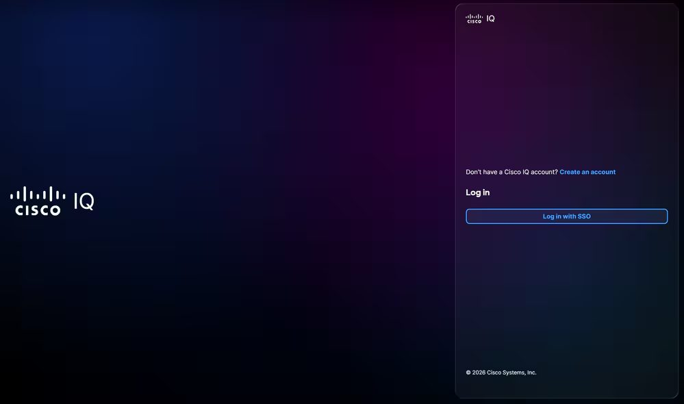
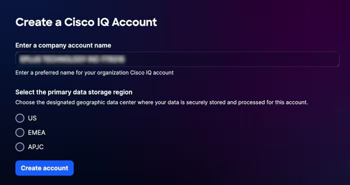
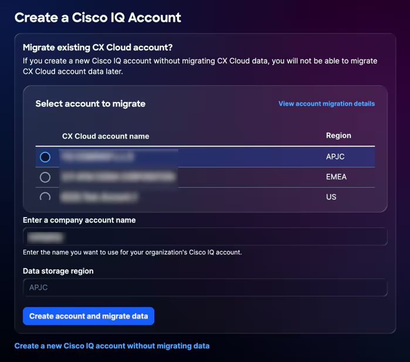
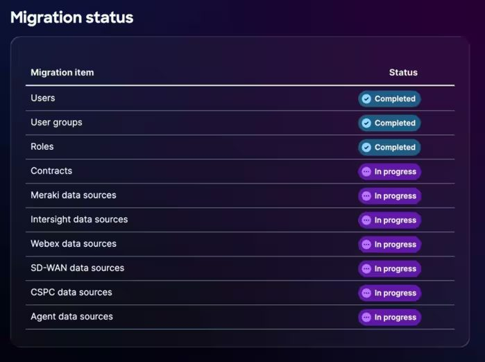
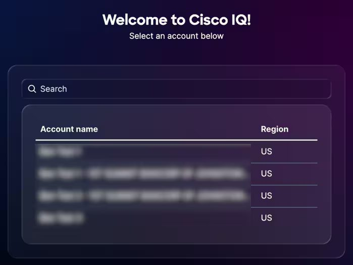

사전 요구사항
• 지원 브라우저 : Google Chrome, Microsoft Edge, Apple Safari, Mozilla Firefox (최신 버전)Cisco.com 계정 (CCO ID) 필요 — 없으면 여기 에서 생성
새 Cisco IQ 계정 생성
https://iq.cisco.com 접속Create an account 클릭CCO ID (이메일) 입력 → Next
비밀번호 입력 → Verify
"Create a Cisco IQ Account" 페이지에서:
회사 계정 이름 입력 (조직에서 사용할 고유한 이름)
데이터 저장 영역 선택 (US / EMEA / APJC)
Create account 클릭 → Cisco IQ 런치패드로 이동

▲ iq.cisco.com 로그인 / Create an account 진입

▲ 회사 계정 이름 · 데이터 저장 영역 입력
기존 CX Cloud 계정을 Cisco IQ로 마이그레이션
⚠️ 주의 : 마이그레이션 없이 새 계정을 생성하면 나중에 CX Cloud 데이터를 마이그레이션할 수 없습니다. 계정 관리자(Super User Admin)만 마이그레이션 가능합니다.
https://iq.cisco.com 접속 → Create an account CCO ID로 로그인
"Create a Cisco IQ Account" 페이지에서 마이그레이션할 CX Cloud 계정 선택
Cisco IQ 계정 이름 입력 (데이터 저장 영역은 기존 계정에서 자동 설정)
Create account and migrate data 클릭Migration Status 페이지에서 완료 확인 → Continue
마이그레이션되는 항목: 사용자/그룹, 서비스 계약, 클라우드 데이터 소스 (Intersight, Webex, SD-WAN, Meraki)

▲ 마이그레이션할 CX Cloud 계정 선택

▲ 마이그레이션 진행 상태 확인 → Continue
기존 계정에 로그인
https://iq.cisco.com 접속Log in with SSO 클릭CCO ID (이메일) + 비밀번호 입력 → Verify
계정이 여러 개인 경우 목록에서 선택

▲ 계정이 여러 개일 때 사용할 계정 선택
참고: 계정에 추가되지 않은 사용자는 계정 관리자에게 액세스 요청이 필요합니다.
계정 생성 후 초기 설정 (관리자)
클라우드 제품 연결 : System Settings → Data Connectors에서 Intersight, Meraki, SD-WAN 등 연결서비스 계약 추가 : System Settings → Service Contracts에서 계약 번호 입력Cisco IQ Link 연결 : 온프레미스 장비 연동을 위해 IQ Link VM 배포 및 등록사용자 관리 : System Settings → Users에서 팀원 추가 및 역할 할당 (Admin / Viewer)
출처: Cisco IQ 시작하기 가이드 (한국어)
Prerequisites
• Supported browsers : Google Chrome, Microsoft Edge, Apple Safari, Mozilla Firefox (latest version)Cisco.com account (CCO ID) required — create one at the Cisco account help page if you don't have one
Create a New Cisco IQ Account
Go to https://iq.cisco.com
Click Create an account
Enter your CCO ID (email) → Next
Enter your password → Verify
On the "Create a Cisco IQ Account" page:
Enter a company account name (a unique name for your organization)
Select a data storage region (US / EMEA / APJC)
Click Create account → You'll be redirected to the Cisco IQ Launchpad
▲ iq.cisco.com login / Create an account entry
▲ Enter account name and data storage region
Migrate an Existing CX Cloud Account to Cisco IQ
⚠️ Note : If you create a new account without migrating, you will not be able to migrate CX Cloud data later. Only account administrators (Super User Admin) can perform migration.
Go to https://iq.cisco.com → Click Create an account
Log in with your CCO ID
On the "Create a Cisco IQ Account" page, select the CX Cloud account to migrate
Enter a Cisco IQ account name (data storage region is automatically set from the existing account)
Click Create account and migrate data
Confirm completion on the Migration Status page → Click Continue
Migrated items: Users/groups, service contracts, cloud data sources (Intersight, Webex, SD-WAN, Meraki)
▲ Select the CX Cloud account to migrate
▲ Confirm migration status → Continue
Log In to an Existing Account
Go to https://iq.cisco.com
Click Log in with SSO
Enter your CCO ID (email) + password → Verify
If you have multiple accounts, select one from the list
▲ Select the account to use when you have multiple accounts
Note: Users who are not added to an account need to request access from the account administrator.
Initial Setup After Account Creation (Admin)
Connect cloud products : System Settings → Data Connectors to connect Intersight, Meraki, SD-WAN, etc.Add service contracts : System Settings → Service Contracts to enter contract numbersConnect Cisco IQ Link : Deploy and register IQ Link VM for on-premises device connectivityManage users : System Settings → Users to add team members and assign roles (Admin / Viewer)
Source: Cisco IQ Getting Started Guide